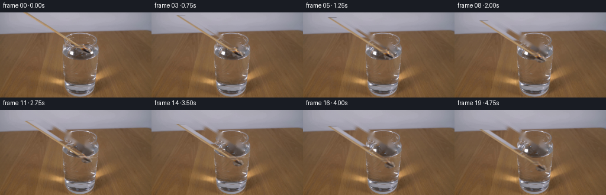
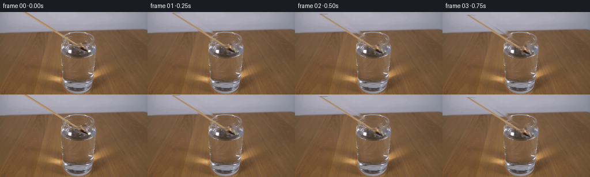

CODING AGENTS AS PIXEL WORLD MODELS
traex/GPT-5.6-Sol · 0110
点击播放 · 原生 RGB 像素
逐轮保存的候选
回放视频、检查图与代码变化。
每份候选均可单独播放。实际图片检查记录在下方工具轨迹中。
候选 01播放与检查图
点击播放 · 原生 RGB 像素


展开代码变化
--- 上一保存版本
+++ 本次保存版本
@@ -0,0 +1,161 @@
+from pathlib import Path
+import cv2
+import numpy as np
+from PIL import Image
+import artifact_io
+
+# Analytic, fixed-camera animation built directly from the supplied first photograph.
+ROOT = Path(__file__).resolve().parent
+src = np.asarray(Image.open(ROOT / "first_frame.png").convert("RGB"), dtype=np.uint8)
+H, W = src.shape[:2]
+
+def seg_distance_mask(a, b, radius, feather=1.25):
+ yy, xx = np.mgrid[:H, :W].astype(np.float32)
+ p = np.stack((xx, yy), axis=-1)
+ a = np.asarray(a, np.float32); b = np.asarray(b, np.float32)
+ v = b-a
+ t = np.clip(((p-a)*v).sum(-1)/(v@v), 0, 1)
+ d = np.sqrt(((p-(a+t[...,None]*v))**2).sum(-1))
+ return np.clip((radius + feather - d) / feather, 0, 1)
+
+def ellipse_mask(cx, cy, rx, ry, feather=1.0):
+ yy, xx = np.mgrid[:H, :W].astype(np.float32)
+ d = np.sqrt(((xx-cx)/rx)**2 + ((yy-cy)/ry)**2)
+ return np.clip((1 + feather/min(rx,ry) - d)/(feather/min(rx,ry)), 0, 1)
+
+# In frame zero the match runs diagonally in from outside the upper-left edge.
+# Keep the wood, blackened head and the little flame as distinct layers so that
+# the flame can physically disappear at the water surface.
+wood_a = seg_distance_mask((43, -4), (140.5, 59.6), 3.25, 1.35)
+head_a = ellipse_mask(144.8, 65.1, 8.0, 5.2, 1.2)
+# Irregular teardrop around the visible flame, rasterized supersampled.
+S = 4
+fm = np.zeros((H*S, W*S), np.uint8)
+flame_poly = np.array([(136,62),(137,57),(140,53),(142,55),(144,50),
+ (146,56),(149,59),(148,63),(144,65),(140,64)], np.int32)*S
+cv2.fillPoly(fm, [flame_poly], 255, lineType=cv2.LINE_AA)
+fm = cv2.GaussianBlur(fm, (0,0), 1.2*S)
+flame_a = cv2.resize(fm, (W,H), interpolation=cv2.INTER_AREA).astype(np.float32)/255.0
+flame_a = np.clip(flame_a*1.45, 0, 1)
+solid_a = np.maximum(wood_a, head_a)
+all_a = np.maximum(solid_a, flame_a)
+
+# Remove the starting match from a copy of the photograph to reveal the static
+# set behind it. TELEA is restricted to this slim object-shaped footprint.
+removal = cv2.dilate((all_a > .025).astype(np.uint8)*255,
+ cv2.getStructuringElement(cv2.MORPH_ELLIPSE,(5,5)))
+base_bgr = cv2.inpaint(cv2.cvtColor(src, cv2.COLOR_RGB2BGR), removal, 4, cv2.INPAINT_TELEA)
+base = cv2.cvtColor(base_bgr, cv2.COLOR_BGR2RGB).astype(np.float32)
+source_f = src.astype(np.float32)
+
+# Source layers. Pixels are retained from the actual photograph rather than
+# redrawn, preserving its grain, illumination and photographic color response.
+solid_rgb = source_f.copy()
+flame_rgb = source_f.copy()
+
+def warp(arr, dx, dy, interp=cv2.INTER_LINEAR):
+ return cv2.warpAffine(arr, np.float32([[1,0,dx],[0,1,dy]]), (W,H),
+ flags=interp, borderMode=cv2.BORDER_CONSTANT,
+ borderValue=0)
+
+def over(dst, rgb, alpha):
+ a = np.clip(alpha,0,1)[...,None]
+ return dst*(1-a) + rgb*a
+
+def soft_draw(frame, kind, args, color, alpha, scale=4):
+ """Draw a small anti-aliased primitive into an RGB frame."""
+ lay = np.zeros((H*scale,W*scale),np.uint8)
+ if kind == 'ellipse':
+ (cx,cy),(rx,ry),th = args
+ cv2.ellipse(lay,(int(cx*scale),int(cy*scale)),
+ (max(1,int(rx*scale)),max(1,int(ry*scale))),0,0,360,255,th*scale,cv2.LINE_AA)
+ elif kind == 'line':
+ p1,p2,th=args
+ cv2.line(lay,tuple((np.array(p1)*scale).astype(int)),
+ tuple((np.array(p2)*scale).astype(int)),255,max(1,int(th*scale)),cv2.LINE_AA)
+ m=cv2.resize(lay,(W,H),interpolation=cv2.INTER_AREA).astype(np.float32)/255*alpha
+ return over(frame,np.broadcast_to(np.array(color,np.float32),(H,W,3)),m)
+
+frames = [src.copy()]
+water_y = 79.5
+rng = np.random.default_rng(110)
+for i in range(1,20):
+ # Deliberately steady hand motion: about 7 pixels/second, with subpixel
+ # sampling so the 4 fps motion does not stutter.
+ dy = 1.72*i
+ dx = 0.10*np.sin(i*0.55)
+ head_y = 65.1 + dy
+ contact = np.clip((head_y-76.5)/7.0, 0, 1) # flame quenches over ~1 second
+ frame = base.copy()
+
+ wa = warp(solid_a.astype(np.float32), dx, dy)
+ wrgb = warp(solid_rgb, dx, dy)
+
+ # The part seen through water is slightly dimmer/warmer and optically
+ # displaced at the meniscus, while the dry part stays untouched.
+ yy = np.arange(H,dtype=np.float32)[:,None]
+ underwater = np.clip((yy-water_y)/2.0,0,1)
+ dry_a = wa*(1-underwater)
+ frame = over(frame, wrgb, dry_a)
+ wet_a = wa*underwater
+ # Tiny horizontal refraction of the submerged part.
+ wet_a = warp(wet_a, 1.15, 0)
+ wet_rgb = warp(wrgb, 1.15, 0)
+ wet_rgb = wet_rgb*.78 + base*.22
+ wet_rgb[...,0] *= .97; wet_rgb[...,2] *= 1.035
+ frame = over(frame, wet_rgb, wet_a*.88)
+
+ # Move the photographed flame until immersion, reducing both its visible
+ # body and its glow as water reaches the head.
+ fa = warp(flame_a, dx, dy) * (1-contact)**1.35
+ frgb = warp(flame_rgb, dx, dy)
+ frame = over(frame, frgb, fa)
+
+ # A restrained warm core and glow make the sub-5-pixel flame legible.
+ if contact < .98:
+ flick = np.sin(i*1.71)*0.65 + np.sin(i*2.93)*0.35
+ fx = 143.5 + dx + 0.55*flick
+ fy = 58.8 + dy
+ # blurred glow
+ glow = np.zeros((H,W),np.float32)
+ cv2.circle(glow,(int(round(fx)),int(round(fy))),4,1,-1,cv2.LINE_AA)
+ glow=cv2.GaussianBlur(glow,(0,0),3.0)*(0.11*(1-contact))
+ frame=over(frame,np.broadcast_to(np.array([248,174,75],np.float32),(H,W,3)),glow)
+ frame=soft_draw(frame,'ellipse',((fx,fy),(1.15,2.25),-1),
+ (255,224,145),.48*(1-contact),4)
+
+ # Meniscus disturbance and a couple of air/steam bubbles after contact.
+ if head_y > water_y-2:
+ age = max(0.0, (head_y-(water_y-2))/1.72)
+ amp = np.clip(age/2,0,1)*np.clip((12-age)/5,0,1)
+ # Fine horizontal ripples confined to the interior width of the glass.
+ for k,(rx,off) in enumerate(((11.0,0.0),(17.0,1.2))):
+ fade=amp*(.32 if k==0 else .18)*np.exp(-max(0,age-4)*.14)
+ frame=soft_draw(frame,'ellipse',((146+dx,water_y+off),(rx,1.1),1),
+ (201,190,185),fade,4)
+ # Sparse bubbles rise from the extinguished head; deterministic paths.
+ if contact>.45:
+ for j in range(3):
+ start = 9.0 + j*3.0
+ life = i-start
+ if 0 <= life <= 7:
+ bx = 147.5 + 1.8*np.sin(.9*life+j*1.7)
+ by = min(head_y+1, 86+j*2)-1.30*life
+ rad = .65 + .18*j
+ frame=soft_draw(frame,'ellipse',((bx,by),(rad,rad),1),
+ (205,203,206),.30*(1-life/8),4)
+
+ # Brief, wispy vapor just as the flame goes out, entirely within a few px.
+ if 0.25 < contact < 1.0:
+ q=(contact-.25)/.75
+ x0=145+1.5*np.sin(i*.8)
+ y0=water_y-1-4*q
+ frame=soft_draw(frame,'line',((x0,water_y-1),(x0+1.8,y0),.55),
+ (188,184,187),.16*(1-q),4)
+
+ frames.append(np.clip(frame+0.5,0,255).astype(np.uint8))
+
+frames=np.stack(frames,axis=0)
+# Contract-critical: first output must be byte-identical to the input.
+frames[0]=src
+artifact_io.save(frames, ROOT)
可观测工具轨迹
实际执行的命令与返回图片。
命令 1exit 0
/bin/bash -lc "cat prompt.txt && printf '\\n---RULES---\\n' && cat GENERATION_RULES.md"
命令 2exit 0
/bin/bash -lc "find . -maxdepth 2 -type f -printf '%p %s bytes\\n' | sort"
命令 3exit 0
/bin/bash -lc "python3 - <<'PY'
from PIL import Image
import numpy as np
im=np.array(Image.open('first_frame.png').convert('RGB'))
print(im.shape, im.min(), im.max(), im.mean((0,1)), im.std((0,1)))
# row col means/std, edge energy
lum=im.mean(2)
for y in range(0,144,8): print('row',y, np.round(im[y:y+8].mean((0,1)),1), 'std',round(im[y:y+8].std(),1))
for x in range(0,256,16): print('col',x, np.round(im[:,x:x+16].mean((0,1)),1), 'std',round(im[:,x:x+16].std(),1))
PY"命令 4exit 0
/bin/bash -lc "python3 - <<'PY'
import cv2, numpy as np
im=cv2.imread('first_frame.png'); g=cv2.cvtColor(im,cv2.COLOR_BGR2GRAY)
# print grayscale and edge ascii each 4x4 ->64x36
for typ,a in [('gray',g),('edges',cv2.Canny(g,50,120))]:
print('\\n',typ)
a=cv2.resize(a,(64,36),interpolation=cv2.INTER_AREA)
chars=' .:-=+*#%@'
for row in a:
print(''.join(chars[min(9,int(v)*10//256)] for v in row))
PY"命令 5exit 0
/bin/bash -lc "python3 - <<'PY'
import cv2,numpy as np
im=cv2.imread('first_frame.png'); hsv=cv2.cvtColor(im,cv2.COLOR_BGR2HSV)
# connected components by special masks
masks={
'bright': cv2.cvtColor(im,cv2.COLOR_BGR2GRAY)>210,
'white_low_sat':(hsv[:,:,1]<40)&(hsv[:,:,2]>170),
'orange':(hsv[:,:,0]<25)&(hsv[:,:,1]>100)&(hsv[:,:,2]>130),
'red':((hsv[:,:,0]<10)|(hsv[:,:,0]>170))&(hsv[:,:,1]>120),
'blue':(hsv[:,:,0]>90)&(hsv[:,:,0]<135)&(hsv[:,:,1]>60),
'dark':hsv[:,:,2]<60}
for name,m in masks.items():
n,lab,st,cen=cv2.connectedComponentsWithStats(m.astype('uint8'))
print('\\n',name,'pixels',m.sum())
for i in np.argsort(st[1:,4])[-10:]+1:
if st[i,4]>3: print(st[i].tolist(), np.round(cen[i],1).tolist())
PY"命令 6exit 0
/bin/bash -lc "python3 - <<'PY'
import cv2, numpy as np
im=cv2.imread('first_frame.png'); g=cv2.cvtColor(im,cv2.COLOR_BGR2GRAY)
e=cv2.Canny(g,50,120)
cs,_=cv2.findContours(e,cv2.RETR_LIST,cv2.CHAIN_APPROX_SIMPLE)
for c in sorted(cs,key=cv2.contourArea,reverse=True)[:40]:
x,y,w,h=cv2.boundingRect(c); print('area',round(cv2.contourArea(c),1),'bbox',x,y,w,h,'len',cv2.arcLength(c,False))
# sample 8x8 block RGB grid around center encoded closest color clustering
from sklearn.cluster import KMeans
pix=im[:,:,::-1].reshape(-1,3)
km=KMeans(12,random_state=0,n_init=3).fit(pix)
print('centers rgb',np.round(km.cluster_centers_).astype(int))
lab=km.labels_.reshape(144,256)
chars='0123456789AB'
for y in range(24,144,4):
print(f'{y:3}', ''.join(chars[np.bincount(lab[y:y+4,x:x+4].ravel(),minlength=12).argmax()] for x in range(0,256,4)))
PY"命令 7exit 0
/bin/bash -lc "python3 - <<'PY'
import cv2,numpy as np
im=cv2.imread('first_frame.png'); g=cv2.cvtColor(im,cv2.COLOR_BGR2GRAY); e=cv2.Canny(g,30,100)
lines=cv2.HoughLinesP(e,1,np.pi/180,threshold=10,minLineLength=8,maxLineGap=5)
for l in sorted(lines[:,0].tolist(), key=lambda q: -((q[2]-q[0])**2+(q[3]-q[1])**2))[:80]:
x1,y1,x2,y2=l; print(l,'len',round(np.hypot(x2-x1,y2-y1),1),'ang',round(np.degrees(np.arctan2(y2-y1,x2-x1)),1))
PY"命令 8exit 0
/bin/bash -lc "python3 - <<'PY'
from PIL import Image
import numpy as np
im=np.array(Image.open('first_frame.png'))
xs=list(range(0,257,16)); ys=list(range(0,145,8))
for y in ys[:-1]:
print('\\ny',y)
for x in xs[:-1]:
a=im[y:min(y+4,144),x:min(x+4,256)].mean((0,1)).astype(int)
print(f'{x:3}:{a[0]:3},{a[1]:3},{a[2]:3}',end=' ')
print()
PY"命令 9exit 0
/bin/bash -lc "python3 - <<'PY'
import cv2,numpy as np
from sklearn.cluster import KMeans
im=cv2.imread('first_frame.png')[:,:,::-1]
km=KMeans(12,random_state=0,n_init=5).fit(im.reshape(-1,3))
print([(i, list(np.round(x).astype(int))) for i,x in enumerate(km.cluster_centers_)])
l=km.labels_.reshape(144,256)
chars='0123456789AB'
for y in range(24,126,2):
s=''
for x in range(94,176,2):
z=l[y:y+2,x:x+2].ravel(); s+=chars[np.bincount(z,minlength=12).argmax()]
print(f'{y:3} {s}')
PY"命令 10exit 0
/bin/bash -lc "python3 - <<'PY'
from PIL import Image
import numpy as np
im=np.array(Image.open('first_frame.png')).astype(int)
# sample across line x=(y? line x=46+1.6*y) for y 0..72, offsets normal-ish x
for y in range(0,75,3):
x=round(46+1.6*y)
vals=[]
for d in range(-8,9,2):
xx=x+d; vals.append('%3d/%3d/%3d'%tuple(im[y,xx]))
print(y,x,' '.join(vals))
PY"命令 11exit 0
/bin/bash -lc "python3 - <<'PY'
from PIL import Image
import numpy as np, colorsys
A=np.array(Image.open('first_frame.png'))
# chars based RGB
for y in range(30,90,2):
s=''
for x in range(90,181,2):
r,g,b=A[y:y+2,x:x+2].mean((0,1)); mx=max(r,g,b); mn=min(r,g,b)
if mx<60:c='X'
elif mx<90:c='D'
elif mx<115:c='d'
elif mx>220 and mx-mn<35:c='W'
elif mx>180 and mx-mn<30:c='w'
elif mx-mn<12:c='g'
elif mx-mn<30:c='s'
elif r>180 and g>130 and b<125:c='Y'
elif r>150 and r-g>25 and g-b>20:c='o'
elif r>125 and r-g>20 and g-b>15:c='b'
else:c='.'
s+=c
print(f'{y:3} {s}')
PY"命令 12exit 0
/bin/bash -lc "python3 - <<'PY'
from PIL import Image
import numpy as np
A=np.array(Image.open('first_frame.png'))
for y in range(40,81):
xs=[]
for x in range(95,175):
r,g,b=A[y,x]
if r>175 and g>110 and r-g>25 and g-b>15: xs.append((x,int(r),int(g),int(b)))
if xs: print(y,xs)
PY"命令 13exit 0
/bin/bash -lc 'cat artifact_io.py'
命令 14exit 0
/bin/bash -lc "python3 - <<'PY'
from PIL import Image
import numpy as np
A=np.array(Image.open('first_frame.png')).astype(int)
for y in range(45,83):
s=''
for x in range(118,171):
r,g,b=A[y,x]; mx=max(r,g,b); mn=min(r,g,b)
if mx<45:c='X'
elif mx<70:c='D'
elif mx<95:c='d'
elif mx<120:c='-'
elif mx<145:c='.'
elif mx>235 and mx-mn<30:c='W'
elif mx>195 and mx-mn<30:c='w'
elif mx-mn<15:c='g'
elif mx-mn<35:c='s'
elif r>195 and g>135 and b<130:c='Y'
elif r>165 and r-g>25 and g-b>15:c='o'
elif r-g>20 and g-b>12:c='b'
else:c='?'
s+=c
print(f'{y:3} {s}')
PY"命令 15exit 0
/bin/bash -lc "cat > generate.py <<'PY'
from pathlib import Path
import cv2
import numpy as np
from PIL import Image
import artifact_io
# Analytic, fixed-camera animation built directly from the supplied first photograph.
ROOT = Path(__file__).resolve().parent
src = np.asarray(Image.open(ROOT / \"first_frame.png\").convert(\"RGB\"), dtype=np.uint8)
H, W = src.shape[:2]
def seg_distance_mask(a, b, radius, feather=1.25):
yy, xx = np.mgrid[:H, :W].astype(np.float32)
p = np.stack((xx, yy), axis=-1)
a = np.asarray(a, np.float32); b = np.asarray(b, np.float32)
v = b-a
t = np.clip(((p-a)*v).sum(-1)/(v@v), 0, 1)
d = np.sqrt(((p-(a+t[...,None]*v))**2).sum(-1))
return np.clip((radius + feather - d) / feather, 0, 1)
def ellipse_mask(cx, cy, rx, ry, feather=1.0):
yy, xx = np.mgrid[:H, :W].astype(np.float32)
d = np.sqrt(((xx-cx)/rx)**2 + ((yy-cy)/ry)**2)
return np.clip((1 + feather/min(rx,ry) - d)/(feather/min(rx,ry)), 0, 1)
# In frame zero the match runs diagonally in from outside the upper-left edge.
# Keep the wood, blackened head and the little flame as distinct layers so that
# the flame can physically disappear at the water surface.
wood_a = seg_distance_mask((43, -4), (140.5, 59.6), 3.25, 1.35)
head_a = ellipse_mask(144.8, 65.1, 8.0, 5.2, 1.2)
# Irregular teardrop around the visible flame, rasterized supersampled.
S = 4
fm = np.zeros((H*S, W*S), np.uint8)
flame_poly = np.array([(136,62),(137,57),(140,53),(142,55),(144,50),
(146,56),(149,59),(148,63),(144,65),(140,64)], np.int32)*S
cv2.fillPoly(fm, [flame_poly], 255, lineType=cv2.LINE_AA)
fm = cv2.GaussianBlur(fm, (0,0), 1.2*S)
flame_a = cv2.resize(fm, (W,H), interpolation=cv2.INTER_AREA).astype(np.float32)/255.0
flame_a = np.clip(flame_a*1.45, 0, 1)
solid_a = np.maximum(wood_a, head_a)
all_a = np.maximum(solid_a, flame_a)
# Remove the starting match from a copy of the photograph to reveal the static
# set behind it. TELEA is restricted to this slim object-shaped footprint.
removal = cv2.dilate((all_a > .025).astype(np.uint8)*255,
cv2.getStructuringElement(cv2.MORPH_ELLIPSE,(5,5)))
base_bgr = cv2.inpaint(cv2.cvtColor(src, cv2.COLOR_RGB2BGR), removal, 4, cv2.INPAINT_TELEA)
base = cv2.cvtColor(base_bgr, cv2.COLOR_BGR2RGB).astype(np.float32)
source_f = src.astype(np.float32)
# Source layers. Pixels are retained from the actual photograph rather than
# redrawn, preserving its grain, illumination and photographic color response.
solid_rgb = source_f.copy()
flame_rgb = source_f.copy()
def warp(arr, dx, dy, interp=cv2.INTER_LINEAR):
return cv2.warpAffine(arr, np.float32([[1,0,dx],[0,1,dy]]), (W,H),
flags=interp, borderMode=cv2.BORDER_CONSTANT,
borderValue=0)
def over(dst, rgb, alpha):
a = np.clip(alpha,0,1)[...,None]
return dst*(1-a) + rgb*a
def soft_draw(frame, kind, args, color, alpha, scale=4):
\"\"\"Draw a small anti-aliased primitive into an RGB frame.\"\"\"
lay = np.zeros((H*scale,W*scale),np.uint8)
if kind == 'ellipse':
(cx,cy),(rx,ry),th = args
cv2.ellipse(lay,(int(cx*scale),int(cy*scale)),
(max(1,int(rx*scale)),max(1,int(ry*scale))),0,0,360,255,th*scale,cv2.LINE_AA)
elif kind == 'line':
p1,p2,th=args
cv2.line(lay,tuple((np.array(p1)*scale).astype(int)),
tuple((np.array(p2)*scale).astype(int)),255,max(1,int(th*scale)),cv2.LINE_AA)
m=cv2.resize(lay,(W,H),interpolation=cv2.INTER_AREA).astype(np.float32)/255*alpha
return over(frame,np.broadcast_to(np.array(color,np.float32),(H,W,3)),m)
frames = [src.copy()]
water_y = 79.5
rng = np.random.default_rng(110)
for i in range(1,20):
# Deliberately steady hand motion: about 7 pixels/second, with subpixel
# sampling so the 4 fps motion does not stutter.
dy = 1.72*i
dx = 0.10*np.sin(i*0.55)
head_y = 65.1 + dy
contact = np.clip((head_y-76.5)/7.0, 0, 1) # flame quenches over ~1 second
frame = base.copy()
wa = warp(solid_a.astype(np.float32), dx, dy)
wrgb = warp(solid_rgb, dx, dy)
# The part seen through water is slightly dimmer/warmer and optically
# displaced at the meniscus, while the dry part stays untouched.
yy = np.arange(H,dtype=np.float32)[:,None]
underwater = np.clip((yy-water_y)/2.0,0,1)
dry_a = wa*(1-underwater)
frame = over(frame, wrgb, dry_a)
wet_a = wa*underwater
# Tiny horizontal refraction of the submerged part.
wet_a = warp(wet_a, 1.15, 0)
wet_rgb = warp(wrgb, 1.15, 0)
wet_rgb = wet_rgb*.78 + base*.22
wet_rgb[...,0] *= .97; wet_rgb[...,2] *= 1.035
frame = over(frame, wet_rgb, wet_a*.88)
# Move the photographed flame until immersion, reducing both its visible
# body and its glow as water reaches the head.
fa = warp(flame_a, dx, dy) * (1-contact)**1.35
frgb = warp(flame_rgb, dx, dy)
frame = over(frame, frgb, fa)
# A restrained warm core and glow make the sub-5-pixel flame legible.
if contact < .98:
flick = np.sin(i*1.71)*0.65 + np.sin(i*2.93)*0.35
fx = 143.5 + dx + 0.55*flick
fy = 58.8 + dy
# blurred glow
glow = np.zeros((H,W),np.float32)
cv2.circle(glow,(int(round(fx)),int(round(fy))),4,1,-1,cv2.LINE_AA)
glow=cv2.GaussianBlur(glow,(0,0),3.0)*(0.11*(1-contact))
frame=over(frame,np.broadcast_to(np.array([248,174,75],np.float32),(H,W,3)),glow)
frame=soft_draw(frame,'ellipse',((fx,fy),(1.15,2.25),-1),
(255,224,145),.48*(1-contact),4)
# Meniscus disturbance and a couple of air/steam bubbles after contact.
if head_y > water_y-2:
age = max(0.0, (head_y-(water_y-2))/1.72)
amp = np.clip(age/2,0,1)*np.clip((12-age)/5,0,1)
# Fine horizontal ripples confined to the interior width of the glass.
for k,(rx,off) in enumerate(((11.0,0.0),(17.0,1.2))):
fade=amp*(.32 if k==0 else .18)*np.exp(-max(0,age-4)*.14)
frame=soft_draw(frame,'ellipse',((146+dx,water_y+off),(rx,1.1),1),
(201,190,185),fade,4)
# Sparse bubbles rise from the extinguished head; deterministic paths.
if contact>.45:
for j in range(3):
start = 9.0 + j*3.0
life = i-start
if 0 <= life <= 7:
bx = 147.5 + 1.8*np.sin(.9*life+j*1.7)
by = min(head_y+1, 86+j*2)-1.30*life
rad = .65 + .18*j
frame=soft_draw(frame,'ellipse',((bx,by),(rad,rad),1),
(205,203,206),.30*(1-life/8),4)
# Brief, wispy vapor just as the flame goes out, entirely within a few px.
if 0.25 < contact < 1.0:
q=(contact-.25)/.75
x0=145+1.5*np.sin(i*.8)
y0=water_y-1-4*q
frame=soft_draw(frame,'line',((x0,water_y-1),(x0+1.8,y0),.55),
(188,184,187),.16*(1-q),4)
frames.append(np.clip(frame+0.5,0,255).astype(np.uint8))
frames=np.stack(frames,axis=0)
# Contract-critical: first output must be byte-identical to the input.
frames[0]=src
artifact_io.save(frames, ROOT)
PY
python3 generate.py
python3 - <<'PY'
from PIL import Image
import numpy as np
A=np.array(Image.open('first_frame.png')); B=np.array(Image.open('frames/00.png'))
print('shape',B.shape,'identical',np.array_equal(A,B),'frames',len(list(__import__('pathlib').Path('frames').glob('*.png'))))
for i in [1,4,8,12,16,19]:
C=np.array(Image.open(f'frames/{i:02}.png'))
print(i,'changed',np.count_nonzero(np.any(C"'!=A,2)),'"'MAD',np.abs(C.astype(int)-A).mean())
PY"命令 16exit 0
/bin/bash -lc "python3 - <<'PY'
from PIL import Image
import numpy as np, cv2
A=np.array(Image.open('first_frame.png'))
for i in range(1,20):
B=np.array(Image.open(f'frames/{i:02}.png'))
d=np.max(np.abs(B.astype(int)-A.astype(int)),2)
ys,xs=np.where(d>3)
# compare consecutive temporal max and components
P=np.array(Image.open(f'frames/{i-1:02}.png'))
dd=np.max(np.abs(B.astype(int)-P.astype(int)),2)
print(i, 'vs0 bbox', (xs.min(),ys.min(),xs.max(),ys.max()), 'n>3',len(xs),'consec mean',round(dd.mean(),3),'max',dd.max())
PY
ls -lh pixels.npz index.html inspection.png transition_check.png"保存候选 1 份；完成命令 16 次；可验证图片返回 0 张。原始 API 响应与完整日志保留在本地。